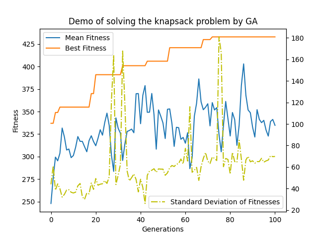

Examples and Comparison of Algorithms¶
[TOC]
Example 1¶
A simple example — Knapsack problem¶
One of the well-known problem is the knapsack problem. It is a good example for GA.
Codes¶
#!/usr/bin/env python3
"""
An ordinary example of the usage of `pyrimidine`
"""
from pyrimidine import MonoIndividual, BinaryChromosome, HOFPopulation
from pyrimidine.benchmarks.optimization import *
n_bags = 50
_evaluate = Knapsack.random(n_bags) # : 0-1 array -> float
# Define the individual class
class MyIndividual(MonoIndividual):
element_class = BinaryChromosome // n_bags
def _fitness(self) -> float:
# To evaluate an individual!
return _evaluate(self.chromosome)
""" Equiv. to
MyIndividual = MonoIndividual[BinaryChromosome//n_bags].set_fitness(_evaluate)
"""
# Define the population class
class MyPopulation(HOFPopulation):
element_class = MyIndividual
default_size = 10
""" Equiv. to
MyPopulation = HOFPopulation[MyIndividual] //10
or, as a population of chromosomes
MyPopulation = HOFPopulation[(BinaryChromosome//n_bags).set_fitness(_evaluate)] //10
"""
pop = MyPopulation.random()
# Define statistics of population
stat = {
'Mean Fitness': 'fitness',
'Best Fitness': 'best_fitness',
'Standard Deviation of Fitnesses': 'std_fitness',
'number': lambda pop: len(pop.individuals) # or `'n_individuals'`
}
# Do statistical task and print the results through the evoluation
data = pop.evolve(stat=stat, n_iter=100, history=True, verbose=True)
# Print the solution(the best individual in the population)
print(pop.best_individual) # or print(pop.solution)
Visualization¶
For visualization, just set history=True in the evolve method. It will return DataFrame object. Then draw the data by the methods of the object.
import matplotlib.pyplot as plt
fig = plt.figure()
ax = fig.add_subplot(111)
ax2 = ax.twinx()
data[['Mean Fitness', 'Best Fitness']].plot(ax=ax)
ax.legend(loc='upper left')
data['Standard Deviation of Fitnesses'].plot(ax=ax2, style='y-.')
ax2.legend(loc='lower right')
ax.set_xlabel('Generations')
ax.set_ylabel('Fitness')
plt.show()

Another Problem¶
Given several problems with two properties: type and number. Select some elements from them, make sure the sum of the numbers equals to an constant \(M\) and minimize the repetition of types. $\( \min R=\max_t |\{t_i=t,i\in I\}|\\ \sum_{i\in I} n_i=M\\ t_i \in T, n_i \in N \)$ We encode a solution with binary chromosome, that means 0/1 presents to be unselected/selected.
#!/usr/bin/env python3
from pyrimidine import *
import numpy as np
t = np.random.randint(1, 5, 20)
n = np.random.randint(1, 4, 20)
M = 10
import collections
def max_repeat(x):
# Maximum repetition
c = collections.Counter(x)
return np.max([b for a, b in c.items()])
class MyIndividual(MonoBinaryIndividual):
def _fitness(self):
"""
Description:
select ti, ni from t, n
the sum of ni ~ 10, while ti repeat as little as possible
"""
x, y = abs(np.sum([ni for ni, c in zip(n, self.chromosome) if c==1])-M), max_repeat(ti for ti, c in zip(t, self.chromosome) if c==1)
return - (x + y)
MyPopulation = StandardPopulation[MyIndividual]
if __name__ == '__main__':
pop = MyPopulation.random(n_individuals=20, size=20)
stat={'Mean Fitness':'mean_fitness', 'Best Fitness':'best_fitness'}
data = pop.evolve(stat=stat, n_iter=100, history=True)
import matplotlib.pyplot as plt
fig = plt.figure()
ax = fig.add_subplot(111)
data[['Mean Fitness', 'Best Fitness']].plot(ax=ax)
ax.set_xlabel('Generations')
ax.set_ylabel('Fitness')
plt.show()

Print the statistical results:
iteration & solution & Mean Fitness & Best Fitness & Standard Deviation of Fitnesses & number
-------------------------------------------------------------
0 & 01100010011111010100100110111010001110101100011111 & 243.8 & 302 & 28.589508565206224 & 10
1 & 01100010011111010100100110111010001110101100011111 & 252.71428571428572 & 302 & 23.944664098197542 & 7
2 & 01100010011111010100100110111010001110101100011111 & 278.57142857142856 & 302 & 20.631855694235433 & 7
3 & 01100010011111010100100110111010001110101100011111 & 278.7142857142857 & 302 & 20.526737168276654 & 7
4 & 01100010011111010100100110111010001110101100011111 & 280.14285714285717 & 302 & 20.910889654016373 & 7
...
Example 2¶
In the following example, the binary chromosomes should be decoded to floats. We recommend digit_converter to handle with it, created by the author for such purpose.
#!/usr/bin/env python3
from pyrimidine.benchmarks.special import *
from pyrimidine import *
from digit_converter import *
# require digit_converter for decoding chromosomes
ndim = 10
def evaluate(x):
return -rosenbrock(x)
class _Chromosome(BinaryChromosome):
def decode(self):
# transform the chromosome to a sequance of 0-1s
return IntervalConverter(-5,5)(self)
class uChromosome(BinaryChromosome):
def decode(self):
return unitIntervalConverter(self)
def _fitness(i):
return evaluate(i.decode())
ExampleIndividual = MultiIndividual[_Chromosome].set_fitness(_fitness) // ndim
class MyIndividual(MixedIndividual[(_Chromosome,)*ndim + (uChromosome,)].set_fitness(_fitness)):
"""My own individual class
The method `mate` is overriden.
"""
ranking = None
threshold = 0.25
@property
def threshold(self):
return self.chromosomes[-1].decode()
def mate(self, other, mate_prob=None):
# mate with threshold and ranking
if other.ranking and self.ranking:
if self.threshold <= other.ranking:
if other.threshold <= self.ranking:
return super().mate(other, mate_prob=0.95)
else:
mate_prob = 1-other.threshold
return super().mate(other, mate_prob)
else:
if other.threshold <= self.ranking:
mate_prob = 1-self.threshold
return super().mate(other, mate_prob=0.95)
else:
mate_prob = 1-(self.threshold+other.threshold)/2
return super().mate(other, mate_prob)
else:
return super().mate(other)
MyPopulation = StandardPopulation[MyIndividual]
Comparison of Algorithms¶
stat = {'Mean Fitness':'mean_fitness', 'Best Fitness': 'best_fitness'}
import matplotlib.pyplot as plt
fig = plt.figure()
ax = fig.add_subplot(111)
_Population = StandardPopulation[ExampleIndividual]
pop = MyPopulation.random(n_individuals=20, sizes=[8]*ndim+[8])
cpy = pop.copy(type_=_Population)
d = cpy.evolve(stat=stat, n_iter=100, history=True)
ax.plot(d.index, d['Mean Fitness'], d.index, d['Best Fitness'], '.-')
d = pop.history(n_iter=100, stat=stat, history=True)
ax.plot(d.index, d['Mean Fitness'], d.index, d['Best Fitness'], '.-')
ax.legend(('Traditional mean','Traditional best', 'New mean', 'New best'))
plt.show()

Example 3¶
Quantum GA¶
It is based on quantum chromosomes. Let use have a look at the source code.
class QuantumChromosome(CircleChromosome):
measure_result = None
def decode(self):
self.measure()
return self.measure_result
def measure(self):
# measure a QuantumChromosome to get a binary sequence
rs = np.random.random(size=(len(self),))
self.measure_result = np.cos(self) ** 2 > rs
self.measure_result.astype(np.int_)
#!/usr/bin/env python3
from pyrimidine import *
from pyrimidine.benchmarks.optimization import *
from pyrimidine.deco import add_memory, fitness_cache
# generate a knapsack problem randomly
n_bags = 50
evaluate = Knapsack.random(n=n_bags)
@fitness_cache
class YourIndividual(BinaryChromosome // n_bags):
def _fitness(self):
return evaluate(self.decode())
YourPopulation = HOFPopulation[YourIndividual] // 20
@fitness_cache
@add_memory({'measure_result': None, 'fitness': None})
class MyIndividual(QuantumChromosome // n_bags):
def _fitness(self):
return evaluate(self.decode())
def backup(self, check=False):
f = self._fitness()
if not check or (self.memory['fitness'] is None or f > self.memory['fitness']):
self._memory = {
'measure_result': self.measure_result,
'fitness': f
}
class MyPopulation(HOFPopulation):
element_class = MyIndividual
default_size = 20
def init(self):
self.backup()
super().init()
def backup(self, check=True):
for i in self:
i.backup(check=check)
def update_hall_of_fame(self, *args, **kwargs):
"""
Update the `hall_of_fame` after each step of evolution
"""
self.backup()
super().update_hall_of_fame(*args, **kwargs)
Visualization and comparison¶
stat={'Mean Fitness': 'mean_fitness', 'Best Fitness': 'best_fitness'}
mypop = MyPopulation.random()
yourpop = YourPopulation([YourIndividual(i.decode()) for i in mypop])
mydata = mypop.evolve(n_iter=100, stat=stat, history=True)
yourdata = yourpop.evolve(n_iter=100, stat=stat, history=True)
import matplotlib.pyplot as plt
fig = plt.figure()
ax = fig.add_subplot(111)
yourdata[['Mean Fitness', 'Best Fitness']].plot(ax=ax)
mydata[['Mean Fitness', 'Best Fitness']].plot(ax=ax)
ax.legend(('Mean Fitness', 'Best Fitness', 'Mean Fitness(Quantum)', 'Best Fitness(Quantum)'))
ax.set_xlabel('Generations')
ax.set_ylabel('Fitness')
ax.set_title(f'Demo of (Quantum)GA: {n_bags}-Knapsack Problem')
plt.show()

Game¶
#!/usr/bin/env python
from random import random, randint
import numpy as np
from pyrimidine import BasePopulation
class Player:
"""
'scissors', 'paper', 'stone' = 0, 1, 2
"""
params = {'mutate_prob': 0.02}
def __init__(self, strategy=0, score=0):
self.strategy = strategy # 1,2
self.score = score
@classmethod
def random(cls):
return cls(strategy=randint(0, 2), score=0)
def clone(self, *args, **kwargs):
return self.__class__(self.strategy, self.score)
def mutate(self):
self.strategy = randint(0, 2)
def init(self):
pass
def __lt__(self, other):
return ((self.strategy, other.strategy) == (0, 1)
or (self.strategy, other.strategy) == (1, 2)
or (self.strategy, other.strategy) == (2, 0))
class Game(BasePopulation):
element_class = Player
default_size = 100
def transition(self, *args, **kwargs):
self.compete()
self.duplicate()
self.mutate()
def compete(self):
k = int(0.5 * self.default_size)
winner = []
for i, p in enumerate(self[:-1]):
for j, q in enumerate(self[:i]):
if random() < 0.5:
if p < q:
p.score += 1
q.score -= 1
elif q < p:
p.score -= 1
q.score += 1
winners = np.argsort([p.score for p in self])[-k:]
self.elements = [self.elements[k] for k in winners]
def duplicate(self):
self.extend(self.clone())
game = Game.random()
stat = {'scissors': lambda game: sum(p.strategy==0 for p in game),
'paper': lambda game: sum(p.strategy==1 for p in game),
'stone': lambda game: sum(p.strategy==2 for p in game)
}
data = game.evolve(stat=stat, history=True)
import matplotlib.pyplot as plt
fig = plt.figure()
ax = fig.add_subplot(111)
data[['scissors', 'paper', 'stone']].plot(ax=ax)
ax.set_title("Have a zero-sum game")
plt.show()